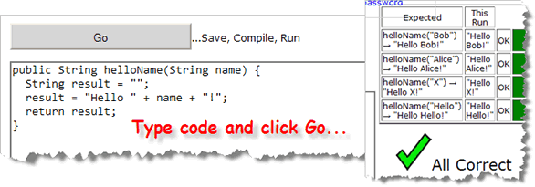

This week you'll continue working with
IPO (input, processing and output) assignments. However,
this week the processing will be more complex (since you'll be using
functions from the Math class), and the input and
output will also be more complex, since you'll be parsing
String
input and formatting the output. You'll also learn how to
write your own procedures and functions.
Here's the list of things you should do this week.
-
Javadocs & Parsing—IntegersAndStrings:
Write a standard console program named IntegersAndStrings.
Place it in the Chapter04 folder, since that's where the test
programs are located. Here are the program's requirements:
- Ask the user to enter an integer and then read and
store the results in a variable. Use the
ScannernextInt()method. - Use the methods in the
Integerclass to print the value of the variable in binary, octal and hexadecimal. You'll need to look them up the appropriate methods in the Javadocs. - Print the maximum and minimum integer values by using the
constants defined in the
Integerclass. - Now, ask the user to enter two integers.
Read and store the input in a pair of
Stringvariables, using thenext()method. Then, convert theStrings toints, add them together and print the results. Use concatenation, but do not format the output numbers.
Here's what your program should look like as it runs. Make sure your program has exactly the same lines of output. (The middle three lines begin with a TAB escape sequence.):
 Once you have created the program, compile it and
then Check your results. Keep trying until you get a perfect
score. HERE is a solution to this
homework exercise.
Once you have created the program, compile it and
then Check your results. Keep trying until you get a perfect
score. HERE is a solution to this
homework exercise.
Understanding how parsing works will be important for PQ03, coming up Thursday. This exercise also gives you some practice using the Java documentation.
- Ask the user to enter an integer and then read and
store the results in a variable. Use the
-
Parsing & Formatting—SalarySurvey:
Write a standard console program named SalarySurvey.
Place it in the Chapter04 folder, since that's where the test
programs are located. Here are the program's requirements:
- Ask the user to enter their first name and desired yearly salary, separated by a space.
- Use the
Scanner'snext()method to read the input into twoStringvariables. - Use the appropriate parsing method to convert the salary
into a
doubleand store it in adoublevariable. - Use
printf()to display the result like this:Name: Steve Desired salary: $ 1,275,315.75 ----+----|----+----|----+----|----+----|----+----|
- You can assume that the user will only enter valid input
for the salary value. The spacing should be the same
for amounts up to 9 million. Here's another example:
Name: BillyG Desired salary: $ 1.00 ----+----|----+----|----+----|----+----|----+----|
Once you have created the program, compile it and then Check your results. Keep trying until you get a perfect score.
-
Formatted Output—ProduceBill:
Create a new standard console application named ProduceBill.
Place it in the Chapter04 folder, since that's where the test
programs are located.
- Prompt the user to enter weight and price
(in that order).
Use a
Scannerto initialize the variables. - Calculate the
totalPriceusingweightandpriceas shown below. - Use output formatting to produce results like this:
Unit Price: $4.25 per pound Weight: 2.56 pounds TOTAL: $10.89
- There are 4 spaces at the beginning of each line of output. These are not TAB characters.
- The labels are left-aligned in a field 11 wide.
- The values are right-aligned in a field 10 wide.
Here, for instance, is what the output should look like with larger numbers:The really tricky part here, though is the floating dollar sign. To get the floating dollar sign, you have to first format the amounts without the width specifier, and then format the resulting
Strings with a width specifier.Unit Price: $27.95 per pound Weight: 123.00 pounds TOTAL: $3,437.85Once you have created the program, compile it and then Check your results. Keep trying until you get a perfect score. HERE is a solution to this homework exercise.
- Prompt the user to enter weight and price
(in that order).
Use a
-
Comprehensive Parsing & Formatting—FutureValue:
Write a standard Java console program named
FutureValue that asks the user for an initial
investment, an annual interest rate and the number of years
to keep the money invested. Print the future value,
assuming that the interest is calculated monthly, as
shown below.
 Read the input as
Read the input as Stringvariables (usingnextLine(), notnext()) and convert to the correct type before doing a calculation. For the investment amount, you should remove any "$", space or "," characters from the input string, using theString replace()function before converting to adoublevalue. For the annual percentage rate, you should remove any spaces and any percent signs.The test programs check your code using plain values (as on the left) as well as values containing these special characters (as on the right). That way, if you have difficulty with that portion, you still get partial credit. (Note: that means you cannot use the
nextDouble()ornextInt()methods in this program.)The formula to calculate the future value of the investment is:
Future Value = Investment x (1 + Monthly Rate)Number of Years x 12For your output, use the
String format()orprintf()method and display three decimals for the rate, and a dollar sign and thousand separators (commas) for both the amount invested and the future value. Display only two decimal places for these amounts as shown in the picture.Once you have created the program, compile it and then Check your results. Keep trying until you get a perfect score. HERE is a solution to this homework exercise.
Make sure you understand the four concepts of "scrubbing" input (using
Stringfunctions), parsing the input to convertStringto different kinds of numbers, processing numbers including casting, remainders and percentages, and formatting the output usingString.format(). These will all be covered on PQ03 this Thursday. -
 Procedural Decomposition: DrawEggs:
In class you learned how to break a single
Procedural Decomposition: DrawEggs:
In class you learned how to break a single main()function into a series of procedures, eliminating redundancy. See if you can do that on your own by writing a complete Java console program named DrawEggs that prints the pattern shown on the right. (Click the image to see it full size.)Here are the requirements:
- You should use at least at least three procedures,
(not counting
main()). - Do not do any printing inside your
main()method. The only thing thatmain()should contain is procedure calls.
Make sure that you make each of the procedures that you write
public. Check your programs with Check. HERE is a solution to this homework exercise. - You should use at least at least three procedures,
(not counting
-
Using String Functions: ProcessName:
This week you learned how to use two more
Stringfunctions. To try out your new expertise, write console program named ProcessName that asks the user to enter their name in the form (First MI. Last) and then prints the resulting name rearranged and labeled in the form "Last, First MI." (including the quotes as shown below).You can use the
Stringfunctionssubstring(),indexOf(),lastIndexOf(),charAt()andtrim()to solve this problem. You may assume:- that every name will have exactly one word for the first and last names and a single character, followed by a period for the middle initial.
- There will be at least one space separating each of the portions of the input name, but there may be more spaces.
 Use Check to double-check your work.
HERE is a solution to this
homework exercise.
Use Check to double-check your work.
HERE is a solution to this
homework exercise.
-
Writing Simple String Functions: StringFunctions:
This is the most important assignment this week.
If you don't do
anything else, you should try to complete these
Stringfunctions in StringFunctions.java. To get started, walk through the hands-on section at the end of the Writing Functions section of Chapter 5 in your online text. That will get you started with the first two exercises. Once you're finished, complete the remaining five problems in the file.As an alternative, you can work on these problems without using DrJava by working with the online homework site CodingBat.com. (That's what the solution videos here use.) This is a non-commercial Web site run by Nick Parlante, a CS professor at Stanford, and you can do all of your work from inside any Web browser. You don't need Java at all. (That means you can practice at the library, for instance.) Here's what the helloName problem (from the lecture looks like at CodingBat:

As you can see, with CodingBat, you just type your code in the text window and then click Go. Your code is saved, compiled and checked on the Web and you're given instant feedback. You can create an account, if you like (not required for class), so that your solutions are saved everytime you visit the site.If you do use CodingBat instead of DrJava and CheckResults, remember that you should not use the
staticmodifier on your functions. With DrJava and Check, you may (so your code will look like that shown in your text), but you don't need to.PQ04 (next Tuesday) will require you write your own
Stringfunctions, similar to these. Make sure you know how to use the built-insubstring()function as well.